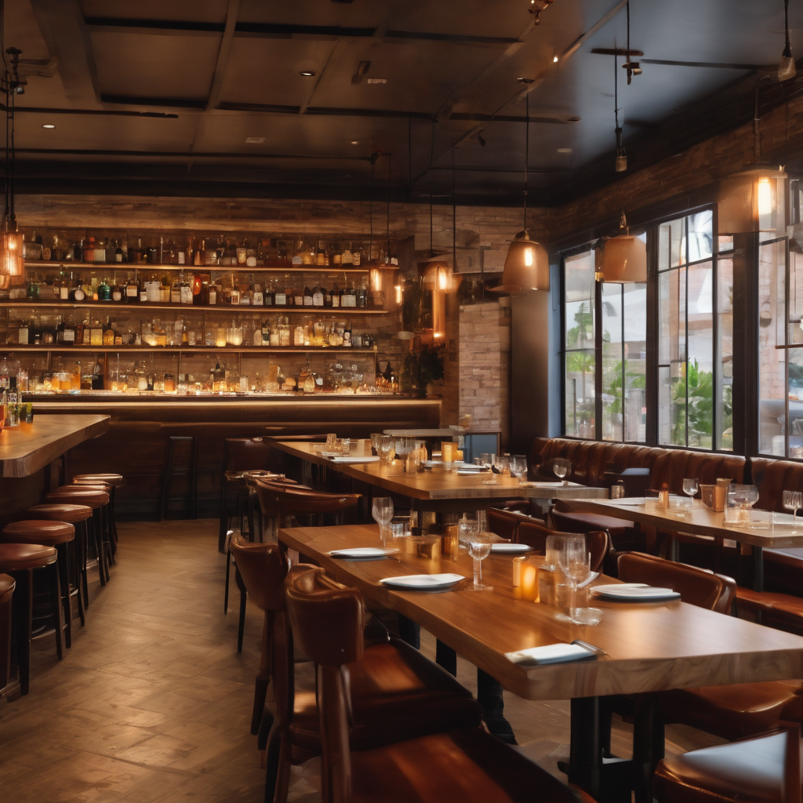

A nossa história
Um grupo de amigos fundou a ByteBite Burgers, uma hamburgueria inovadora que combinava paixões por tecnologia e gastronomia. Steve, Lisa e Alex buscavam criar uma experiência única, incorporando inovação tanto no cardápio quanto na atmosfera do restaurante. O local oferecia hambúrgueres personalizáveis através de tablets interativos, proporcionando uma fusão criativa de sabores tradicionais com toques únicos. A decoração futuristicamente industrial incluía hologramas e mesas com carregadores sem fio. Tornou-se um ponto de encontro para entusiastas de tecnologia, promovendo eventos como noites de realidade virtual e competições de games. O sucesso inicial levou à abertura de filiais em diferentes cidades. A ByteBite Burgers destacava-se como mais do que uma simples hamburgueria, oferecendo uma experiência gastronômica avançada e atraindo clientes de todas as idades.
Nossos laches

TechTreat Tower
É um hambúrguer gourmet inovador, destacando-se por sua carne suculenta, bacon crocante, cebolas caramelizadas e um toque picante de molho de pimenta, tudo envolto em um pão artesanal levemente tostado. Uma experiência culinária única que combina tradição e inovação.

GibaByte Veggie
Uma opção vegetariana com um hambúrguer de grãos tecnológicos, queijo de amêndoas encriptado, vegetais frescos cortados por laser e um molho de realidade aumentada. Servido em um pão de ervas digitais.

Ctrl+ Chesse
O "Ctrl + Chesse" é um hambúrguer tecnologicamente delicioso, apresentando um suculento hambúrguer de carne gourmet coberto com camadas generosas de queijo tecnológico derretido.

Quantum Crunch Chicken
Um sanduíche de frango crocante, coberto com queijo quântico, alface cultivada em hidroponia virtual e molho de realidade aumentada. Acompanhado de batatas fritas cortadas em padrões de algoritmos.